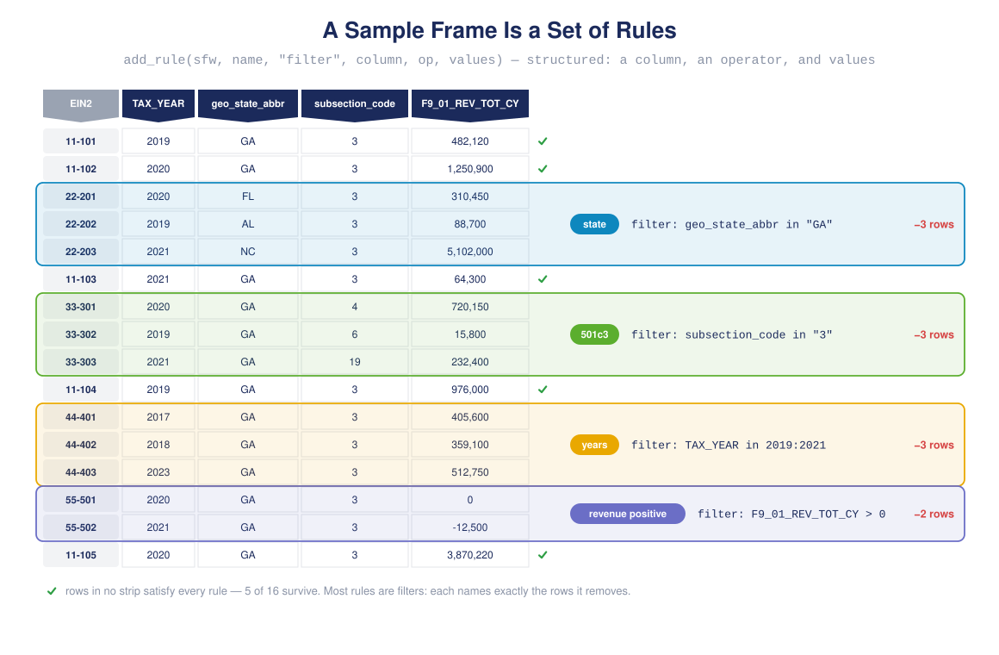
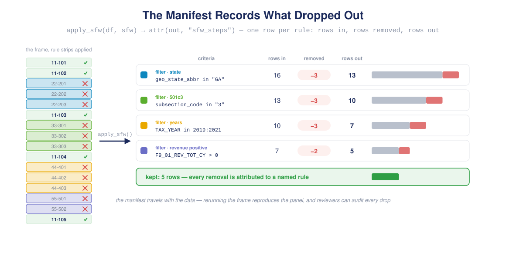
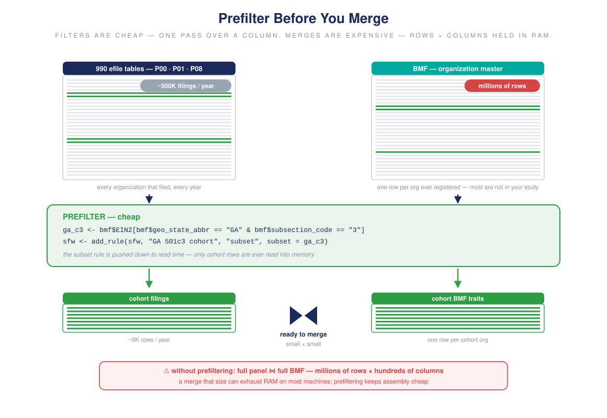

2. The sampling framework
sampling-framework.RmdThe first tutorial specified tables, years, and filters by hand. A sample frame (sfw) captures those same choices as a single reusable object – a registry of keys and typed rules that you can apply to any data frame, check against, and hand to panelize() to govern a build.
Build a frame
A frame is just a set of rules. Friendly arguments to create_sfw() are convenience filters that lower into rules:
sfw <- create_sfw(
"housing 2024",
state = "GA", # -> filter on geo_state_abbr
filter_501c = "3", # -> filter on subsection_code (501(c)(3))
years = 2019:2021 # -> filter on TAX_YEAR
)
sfw
#> <sfw> housing 2024
#> keys:
#> - entity: EIN2 (entity)
#> - time: TAX_YEAR (time)
#> rules: 3
#> - [filter] filter:geo_state_abbr
#> - [filter] filter:subsection_code
#> - [filter] filter:TAX_YEAREntity (EIN2) and time (TAX_YEAR) keys are registered by default. Add the filing-level key so deduplication and joins know a unique record:
Structured rules
Beyond the sugar, add_rule() adds any rule directly. Filters are structured – a column, an operator, and values – which keeps them inspectable and portable:
sfw <- add_rule(sfw, "revenue positive", "filter",
column = "F9_01_REV_TOT_CY", op = ">", values = 0)
get_rules(sfw)
#> name type active detail
#> 1 filter:geo_state_abbr filter TRUE geo_state_abbr in GA
#> 2 filter:subsection_code filter TRUE subsection_code in 3
#> 3 filter:TAX_YEAR filter TRUE TAX_YEAR in 2019,2020,2021
#> 4 revenue positive filter TRUE F9_01_REV_TOT_CY > 0op may be in, not_in, ==, !=, >, >=, <, <=, between, is_true, is_false; for an arbitrary predicate use expr = "...".
Most rules are filters: each one names a column, an operator, and the values it tolerates — which is to say, each one names exactly the rows it removes:

Four filter rules drawn as colored strips over a tall data frame, each strip covering the rows that rule removes
Apply the frame
apply_sfw() runs the rules on a data frame. Here is a tiny stand-in for a BMF-merged panel:
df <- data.frame(
EIN2 = c("EIN-11-1111111", "EIN-22-2222222", "EIN-33-3333333"),
TAX_YEAR = 2020,
geo_state_abbr = c("GA", "GA", "FL"),
subsection_code = c("3", "4", "3"),
F9_01_REV_TOT_CY = c(500000, 0, 250000),
stringsAsFactors = FALSE
)
out <- apply_sfw(df, sfw, verbose = FALSE)
out
#> EIN2 TAX_YEAR geo_state_abbr subsection_code F9_01_REV_TOT_CY
#> 1 EIN-11-1111111 2020 GA 3 5e+05Only the Georgia 501(c)(3) with positive revenue survives. Every step is recorded as a manifest attribute – a reproducible record of what each rule removed:
attr(out, "sfw_steps")
#> step criteria rows_before
#> 1 filter: filter:geo_state_abbr geo_state_abbr in GA 3
#> 2 filter: filter:subsection_code subsection_code in 3 2
#> 3 filter: filter:TAX_YEAR TAX_YEAR in 2019,2020,2021 1
#> 4 filter: revenue positive F9_01_REV_TOT_CY > 0 1
#> rows_after cols_before cols_after
#> 1 2 5 5
#> 2 1 5 5
#> 3 1 5 5
#> 4 1 5 5The manifest is the frame’s audit trail: one row per rule, recording how many rows each one removed on its way to the final panel:

The sfw_steps manifest as a ledger: each rule’s rows in, rows removed, and rows out, with a shrinking bar showing what dropped
conform() answers the inverse question – does a data frame already satisfy the frame? – without changing it:
conform(df, sfw, verbose = FALSE)$rows_violating
#> [1] 2Prefiltering before merges makes it faster
When you hand the frame to panelize(), it governs the build:
Two restrictions are applied before the expensive table merges, so the package does far less work on a large panel:
- Years – only the requested years’ files are downloaded.
-
Entities – if the frame restricts to a set of organizations, that set is pushed down to read time. Because
EIN2is present in every efile table, only those organizations’ rows are ever read, and only they are carried into the merges.
Trait filters (state, 501(c) type, NTEE) live in the BMF, so they resolve after the BMF merge. To turn a trait restriction into a read-time prefilter, resolve it to an organization set from the BMF first, then add it as a subset rule:
bmf <- bmf_retrieve(states = "GA") # just the GA mart
ga_c3 <- bmf$EIN2[bmf$geo_state_abbr == "GA" &
bmf$subsection_code == "3"]
sfw <- add_rule(sfw, "GA 501c3 cohort", "subset", subset = ga_c3)
p <- panelize(sfw = sfw, tables = c("P00", "P01", "P08"), years = 2019:2021)
Two large tables prefiltered down to slim cohort tables before the merge; the full-size merge risks exhausting RAM
Now panelize() reads only those organizations before merging tables and stacking years – the trait filter has become a fast pushdown. The remaining rules still apply after assembly as the source of truth, and the whole pipeline is documented in the resulting panel’s step manifest.